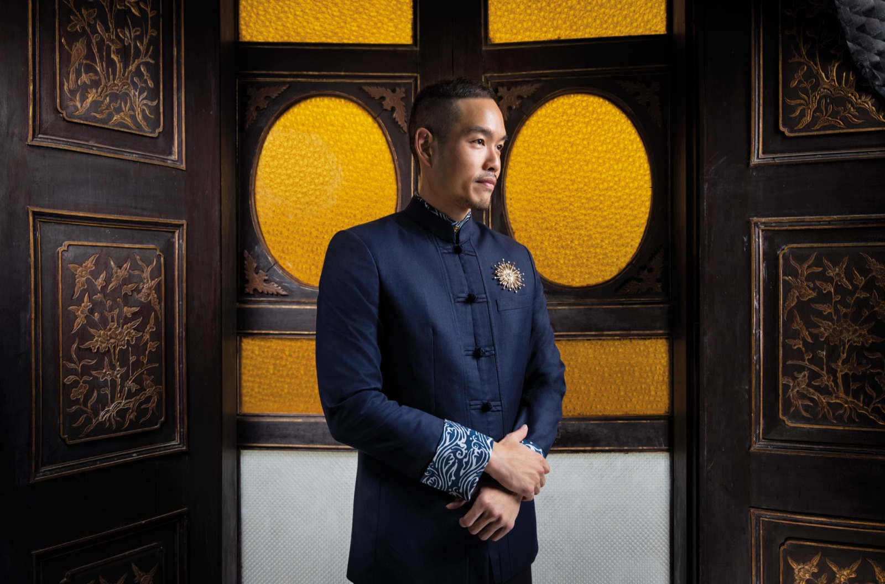
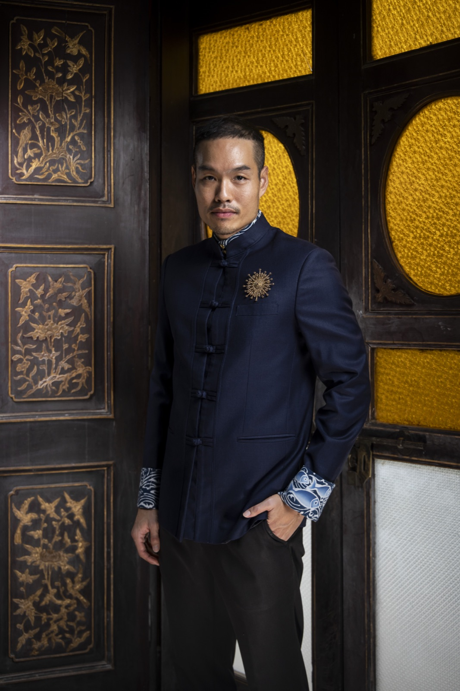
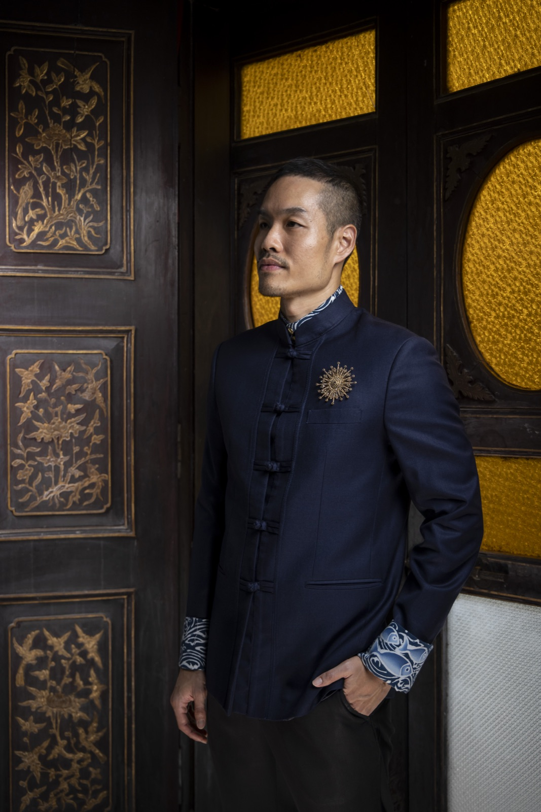
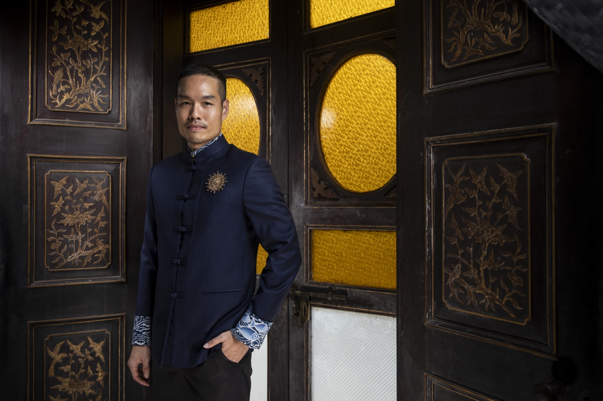
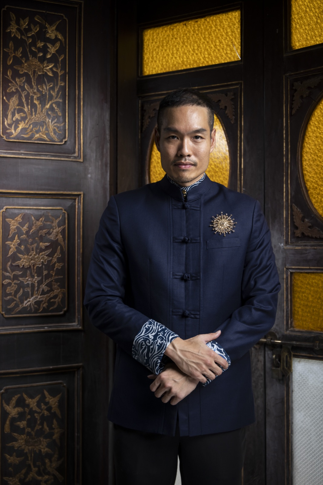
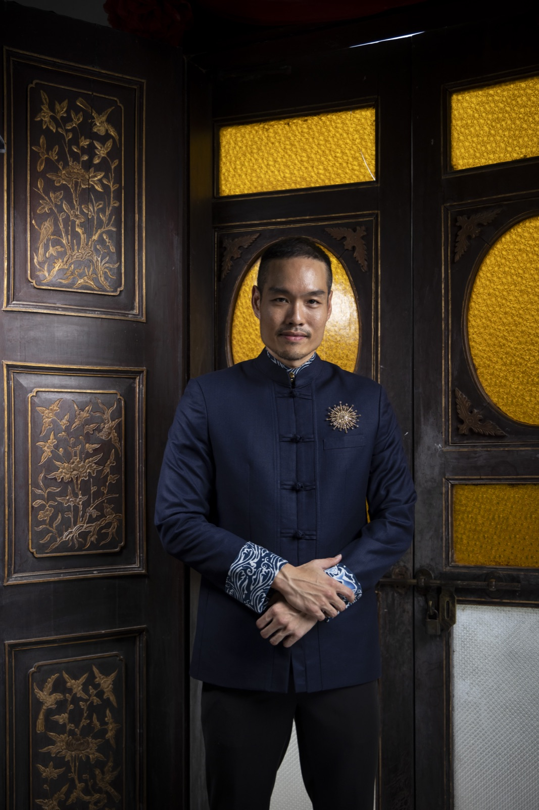

2026 · press · event
Praew, Sep/Oct 2026 — the firstborn son, fourth generation of the Hongyok house






Original text in Thai
นิตยสารแพรวชวนไปถ่ายในคอลัมน์ Scoop เรื่องเพอรานากัน ถ่ายกันที่บ้านชินประชา ในฐานะลูกชายคนโตและทายาทรุ่นที่ 4 ของบ้านหงษ์หยก
ชุดที่ใส่ถ่ายตัดขึ้นเฉพาะงานนี้ ออกแบบโดยคุณอรสา โตสว่าง พี่สาวที่เคารพรัก — โครงและวิธีตัดเย็บเป็นสูทสากล แต่คอเป็นคอตั้งแบบเสื้อจีน แบบเดียวกับที่คนจีนภูเก็ตรุ่นแรกๆ คิดขึ้นตอนเริ่มค้าขายกับต่างชาติ อยากดูภูมิฐานแบบตะวันตกโดยไม่ทิ้งความเป็นจีน ด้านในซ่อนผ้าบาติกวาดมือ แขนข้างหนึ่งเป็นลายน้ำทะเล — ภูเก็ตคือทะเล บรรพบุรุษก็ข้ามทะเลมา และน้ำสำหรับคนจีนหมายถึงความร่มเย็น อีกข้างเป็นปลาสามตัวสามขนาด แทนพี่น้องผู้ชายสามคน ตัวใหญ่สุดคือพี่คนโตที่ว่ายนำน้อง
อีกเรื่องที่เล่าครั้งแรกกับแพรวคือแหวนประจำตระกูล ที่อากงณรงค์ หงษ์หยก ทายาทรุ่นที่ 2 ตั้งใจทำไว้ส่งต่อให้ลูกชายคนโตของบ้าน ส่งต่อตามสายลูกชายคนโต จากอากงถึงพ่อ และอาม่าพูดเสมอว่าวันหนึ่งผมต้องรับต่อ แหวนวงนี้ผมไม่เคยเอาออกสื่อ และคงไม่เอาออก หน้าที่ของคนรับต่อคือเก็บให้ถึงรุ่นถัดไป ไม่ใช่เอาให้ใครดู
ภาพ: แพรว / อิทธิศักดิ์, จิระวุฒิ ศิริจันทร์ · เรื่อง: กิดานันท์